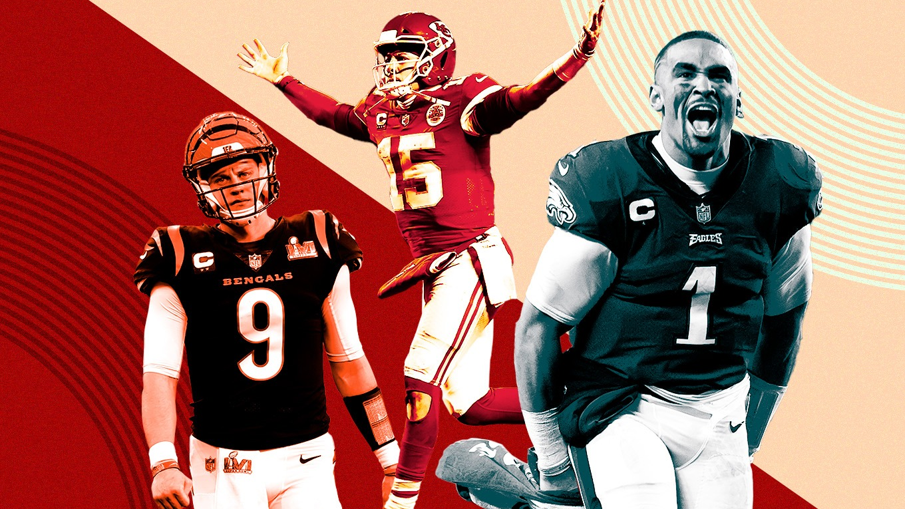
Hey fellas, it was great being together a couple weeks ago, even with those of you tuning in from afar!
I wrote out my weighted rankings based off of QB, RB, WR, TE, FLEX and BENCH, here’s what the (my) data says, and my draft grades. Next week I’ll let my heart start doing the writing.
Good luck everyone, happy football season, let’s go! - 🐍
Week One / Draft Grades
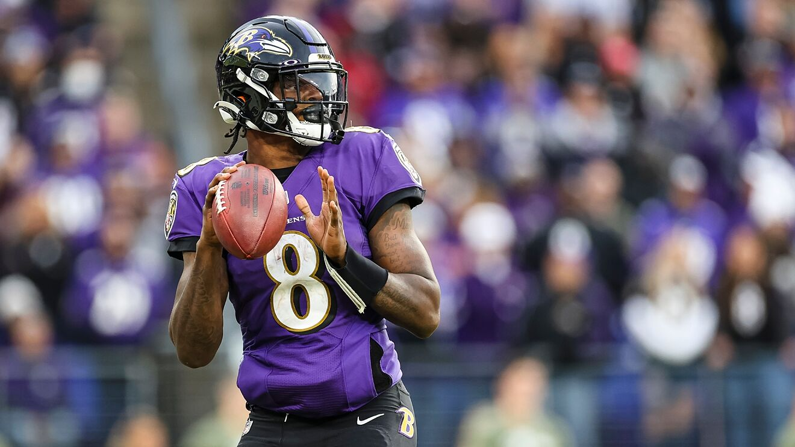
1. Neil -> A
I love the work Neil did on the 10-11 with Kamara, as long as he stays unsuspended, and securing the best TE is very nice. Couple this with a solid flip in the 3rd and 4th, with AJ Brown and DJ Moore. Then grabbing Lamar, we could have the top TE and QB. Neil’s solid at every position.
Favorite Pick: Kelce Least Favorite: Patterson
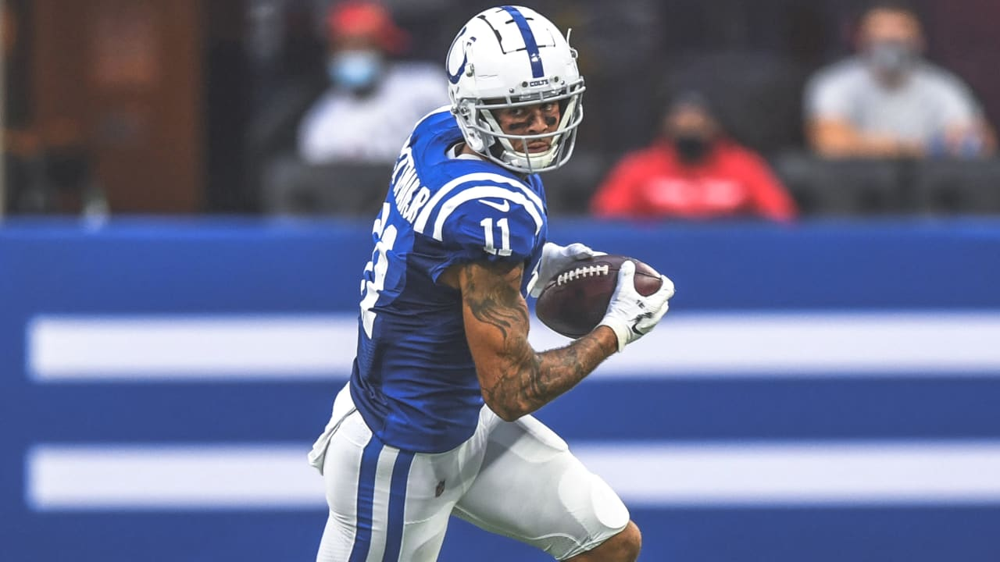
2. Tony -> B
Pittman could be this year’s breakout receiver - he’s kinda boring, but very, very good. Pair him with Diggs and you’re looking pretty solid at WR. Great value for Murray and Andrews, and a couple of RBs that could breakout. Looks good top to bottom.
Favorite Pick: Pittman Least Favorite: Cooper
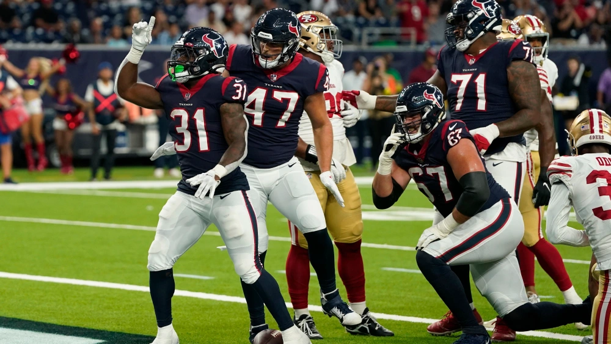
3. PJ -> B
PJ’s confidence in Cook and Mattison should pay off, but I’m not sure who the RB2 on this team is. Pierce is getting alllll the buzz, and Penny should get lots of touches early while KWII heals. But both are on terrible teams. Could Mattison get traded and get a boost? Or is he more valuable simply as Cook’s handcuff? Should be fun to watch MT13 and Nuk on this squad later in the year.
Favorite Pick: Pitts Least Favorite: Penny
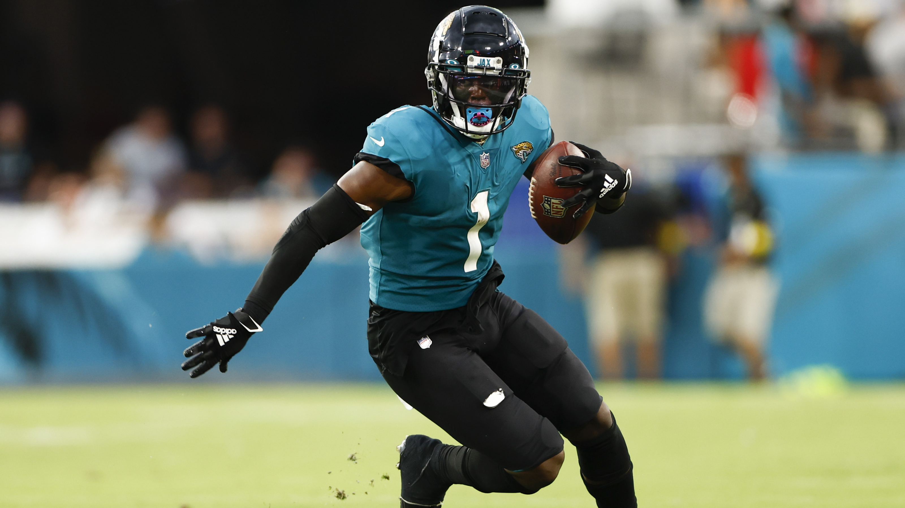
4. Jake -> B-
I am very excited that Kupp fell to me at 8 still, and hope he pairs nicely with many breakout candidates at WR (Davis, Jeudy, Aiyuk, Smith). Big question mark at QB with Lance, but we’ll see! At RB, I need health, but have lots of guys that catch lots of passes. Hope I can just lock Hock in too.
Favorite Pick: Kupp Least Favorite: Barkley
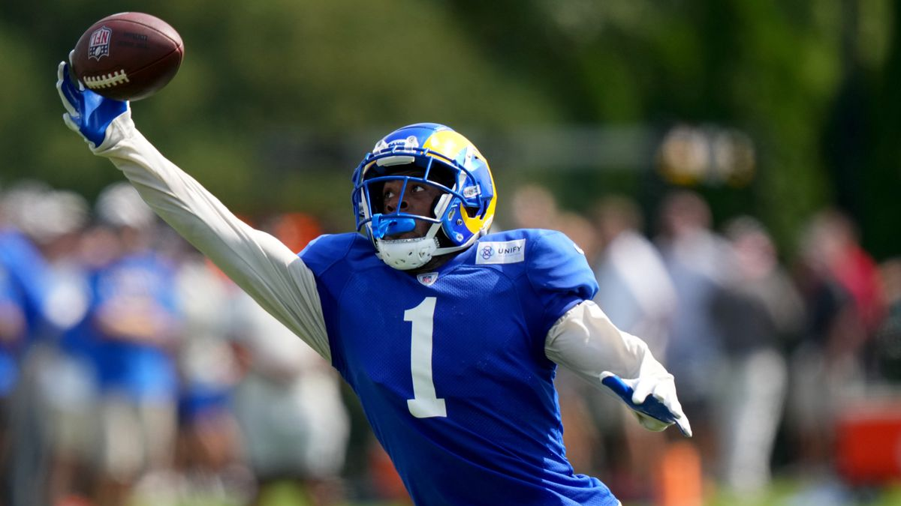
5. Joel -> C
Joel has a nice bench of receivers, but I’m a little concerned with… every running back. I still have his backs ranked in the middle of the league but I don’t think any are locks (health, opportunity, and regression). Goedert is a great value so late, and I think Hurts could take the leap, which would be a nice stack.
Favorite Pick: Kirk Least Favorite: Edmonds
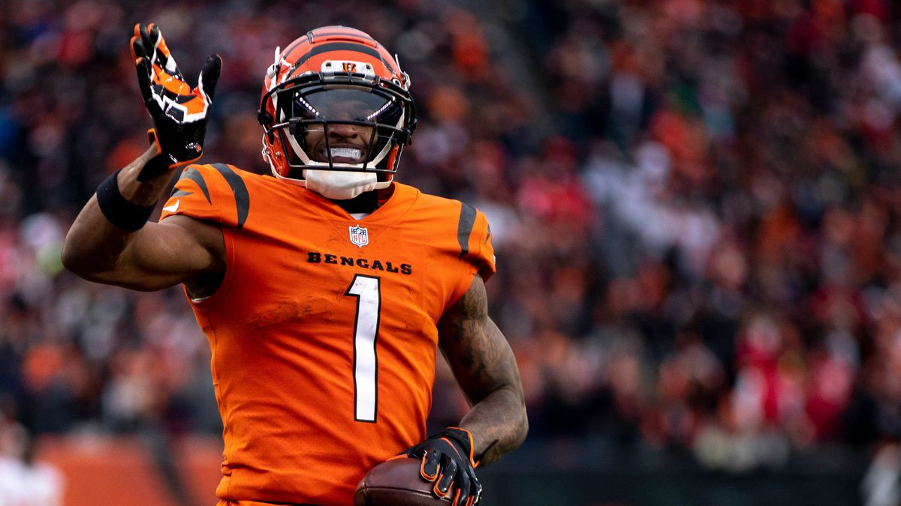
6. Seif -> C
Let’s not spend too much time here since Seif didn’t spend much time with us on draft. Thomas drafted a middle of the pack team, which had a lot of Matt-esque picks.
Favorite Pick: Olave Least Favorite: Hall
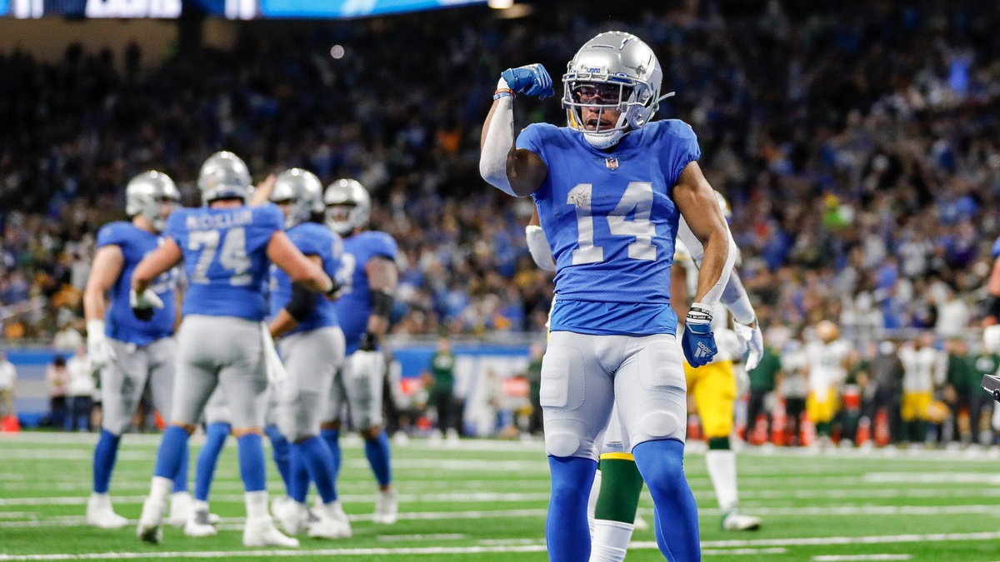
7. Pangy -> C
This is the team I look at and can’t really decide about. Lots of guys that I’m on the fence on, but this team could be very good. Great RB depth, and WRs look pretty good too, but Metcalf and McLaurin both scare me if I’m trusting them as WR1/WR2. His WR depth is about to hit the wire too when he gets a D and Kicker.
Favorite Pick: St. Brown Least Favorite: Gesicki
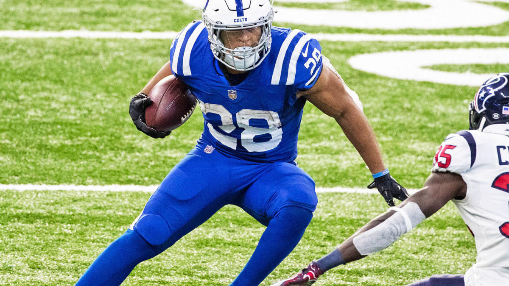
8. Chris -> C-
Couple young guns in JT and Skyy Moore, but lots of oldies on this team again CJ! Loved the run of Higgins, Godwin and Thielen. I think they’ll be reliable enough to compliment taking RB, RB, RB to start the draft.
Favorite Pick: Higgins, Godwin, Thielen (three straight picks) Least Favorite: Lockett
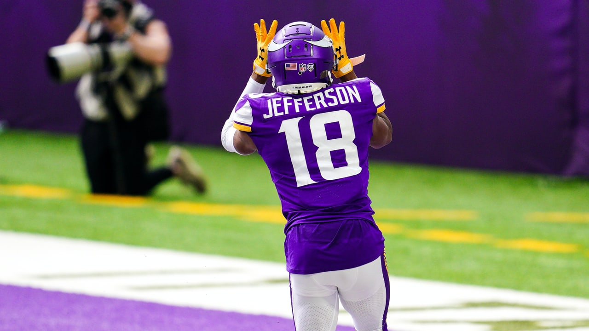
9. Andy -> D
I feel like I’ve probably underrated Andy, but my position-based ranks don’t like him too much - maybe a couplet too many gambles. Stacking Herbert and Williams could be huge. Keep an eye on James Cook early in the season to see how that share works out. Also will be interesting to watch Hunt, playing unhappy and with a new QB/system.
Favorite Pick: Jefferson Least Favorite: Toney
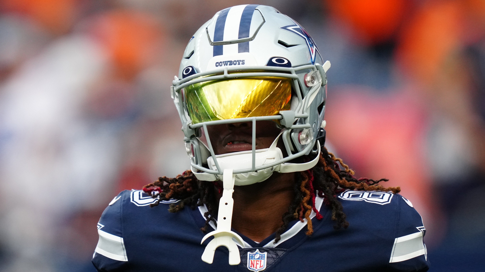
💩 Kris -> D-
Kris, I swear I just let my math do the rankings. Too many valuable roster spots spent on defenses and QBs - only three WRs on this team, and Allen only has 75% of each hamstring left. Prove us wrong big dog.
Favorite Pick: Lamb Least Favorite: Jacobs
“If you’re not gonna go all the way, why go at all?”- Joe Namath
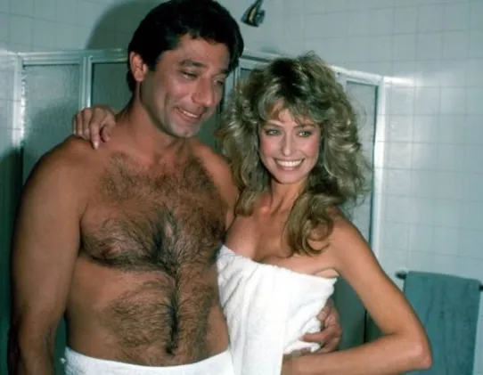